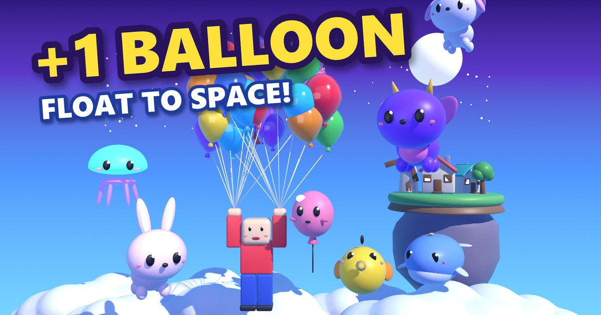

+1 Balloon: Float To Space
風船だけで、宇宙まで飛ぶ。Roblox で遊べる無料のゲームです（ゲーム内課金あり）。
Roblox で遊ぶいまは原則、Roblox の年齢確認を済ませた16歳以上の人が遊べます。16歳未満の人に届けるには Roblox の審査があり、準備を進めています。
プレイ動画
映像は公開前のテスト版を、開発用の強いデータと自動操縦で録画したものです。公開版とは画面や難しさが違います。
制作記の動画


動画の映像は公開前のテスト版を、開発用の強いデータと自動操縦で録画したものです。公開版とは画面や難しさが違います。
作り方の記事
どんなゲーム？
- 風船がひとりでにふえるヘリウムを1本使って飛び立ちます（最大5本、5分で1本回復）。風船が多いほど高く飛べます。
- 腕で飛び続ける金の輪をくぐると、飛んでいられる時間がのびます。上の世界ほど輪が小さく、揺れます。
- おそってくる敵を撃退カラス、ひょう、いん石。タイミングよく撃たないと、風船が割れます。
- 10の空の世界の、その先へ公園から銀河の中心まで。その先にも異世界が続きます。
- 空の生き物を集める強い4匹は庭で風船をふやしてくれて、ゲームを閉じている間も最大8時間ぶん働きます。
- 村が育つ新しい世界に着くたびに、浮島の「ふわり村」が育ちます。世界ランキングもあります。
操作
| 移動 | 撃つ | |
|---|---|---|
| PC | 矢印キー または WASD | スペース または クリック |
| スマホ・タブレット | 画面左のスティック | 画面の右半分をタップ、または 🎯 |
どうやって作ったか
プログラムと3Dモデルは Claude Code、音楽は Suno で作りました。作って、遊んで、指摘して、作り替えました。
よくある質問
- 無料ですか。
- 無料で遊べます。ゲーム内で Robux を使う課金があります。
- 何歳から遊べますか。
- いまは原則、Roblox の年齢確認を済ませた16歳以上の人です。
- ブラウザで遊べますか。
- Roblox のアプリが必要です。PC、スマホ、タブレットに対応しています。
- AI で作ったのですか。
- はい。プログラムと3Dモデルは Claude Code、音楽は Suno です。